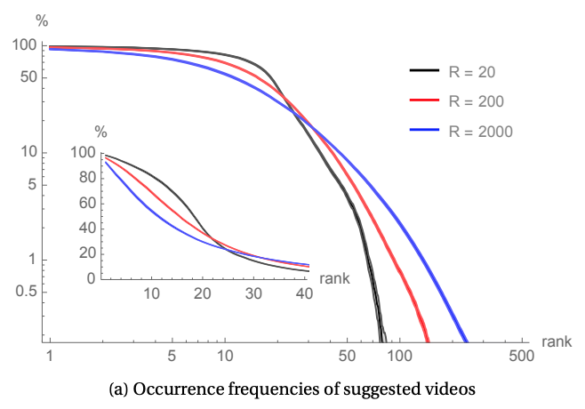

In order to anonymize the data, YouTube video and channel IDs have been mapped to integers that are consistent across all datasets. See the paper for a detailed description of the methodology.
- We considered ~ 650 YouTube videos as seeds.
- We gathered YouTube's suggestions for these seeds, every 10 minutes, at least 2000 times (~ 15 days).
- For each seed, we recursively crawled frequent suggestions up to depth 3.
- Lastly, for each visited page, we gathered a few metadata about the video.
Half are related to the 2019 European Parliement election, the other half were picked based on their popularity on Reddit and Wikipedia. The file ./seeds.csv maps the video IDs to their sample origin.
Each line of ./long_crawl.csv logs the video ID of the seed, followed by the ordered list of suggestions found. This data reveals a clear plateau of highly frequent suggestions.
Each line in ./recursice-crawls/{videoID}.csv logs the node's video ID, the video ID of a suggestion belonging to the plateau, and the depth at which it was suggested.
Each line in ./video_metadata.csv logs: video ID, channel ID, nb. of subscribers, nb. of views, category ID (see ./categories_ids.csv), nb. of likes, nb. of dislikes, age of the video (in seconds).